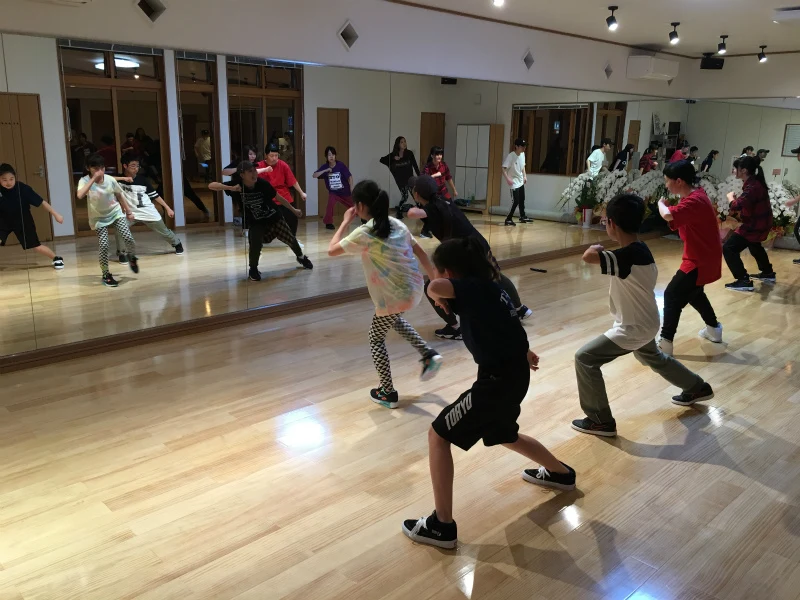
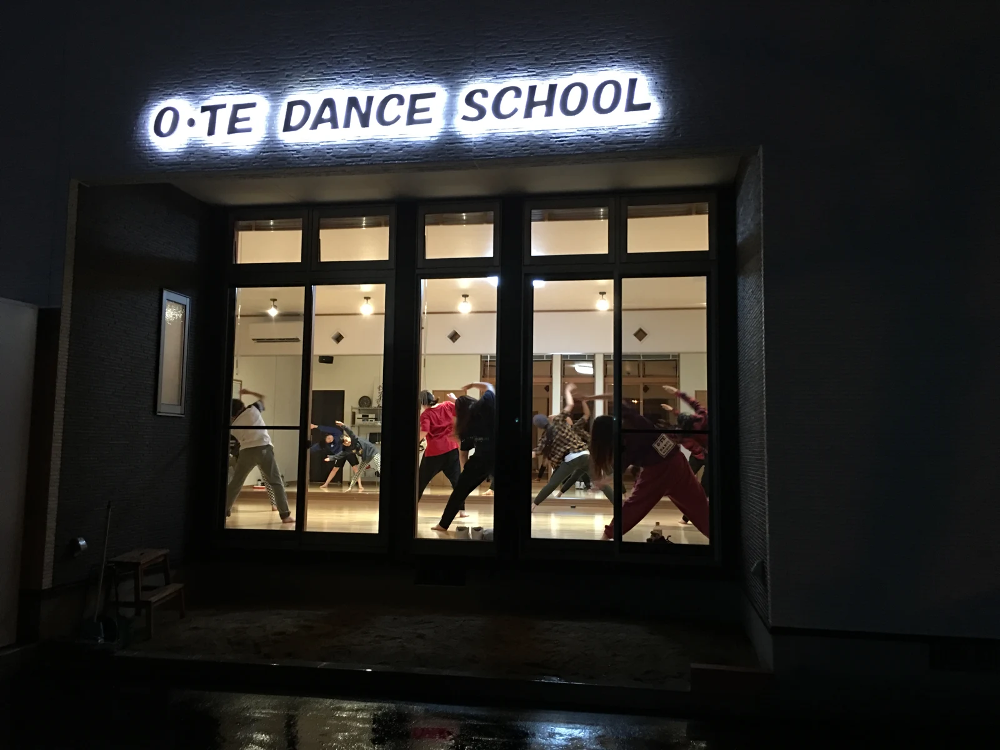

ABOUT US
O・TE Dance School
2歳から大人まで。自分のペースでダンスを楽しめる、福島市のスクールです。
みんなで仲良く、
楽しくダンスをする。
ダンスが好きなメンバーが集まって、毎回のレッスンを楽しく、仲良く。O・TEが大切にしているのは、踊ることを楽しめる時間です。
お子さまから学生、社会人、パパ・ママまで、幅広い年代が通えるクラスをご案内しています。はじめての方も、ダンス経験のある方も、気になるジャンルをご相談ください。

スクールへのアクセス
- 名称
- O・TE Dance School
- 住所
- 〒960-8204
福島県福島市岡部字大蔵17-1 1階 - 電話番号
- 024-502-2377

YOUR FIRST STEP最初の一歩は、
最初の一歩は、
「ちょっと気になる」から。
見学・体験レッスンのご相談は、公式LINEへ。
年齢や気になるジャンル、希望の曜日をお知らせください。
スケジュールやスクールからのお知らせも、公式LINEでご案内しています。

スマートフォンで読み取って
公式LINEへ